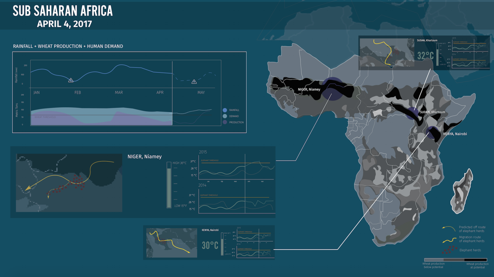

project
control redesign
objective:
Redesign the controls for window blinds
duration:
2 weeks
data visualization
objective:
create a single screen dashboard
duration:
4 weeks
3D Printed Holder
objective:
3D print a sunglasses holder
duration:
2 weeks
Explore opportunities to bring back respect for people’s perceptual-motor skills and the sensuous/sensory nature of their bodies when designing a new instance of a control that people interact with in the physical world. FInd a real-world control that needs to be improved. Then re-imagine the control and design it as a physical point of interaction that communicates these perceptual affordance, feedforward,and feedback.

CURRENT STATE
There are so many different window blinds such as the traditional blinds or roller blinds with the fabric shades. I decided to focus on the traditional venetian style blinds that were most commonly found in households.
Currently, there are two different ways to control the window blinds.
1. The tilt wand changes the angle of the slats
2. The lift cord raises the entire blind up and down
FINAL DESIGN
By redesigning the window blind control, it was easy for people to move up and down and open and close the blinds all in one control. When people are in a rush, they do not need to necessarily use their hands to physically pull down and close the blind. By using any part of the body to push the thumb wheel switch all the way down with enough force, it will also drag the slider down to make it easier to close all your blind at once. As opposed to the remote, people would not have to control the blinds through repetitive motion of continuioiously clicking on a button. This new control makes it easier to adjust the blind without dealing with repetitive motion of a button or the hassle of pulling on a cord or turning a rod.
A. Percepetual Affordance: Having the finger impressions on the side, it provides the contact for the users to move it up and down. I think having the slider track, users can see that the slider can move up and down. Having the switch on the thumbwheel, people will want to move it up and down.
B. Feedforward:The feedforward of the design is that the users can know at which level the blinds are at from the position it is on.
C. Feedback: The feedback of the design is that they should be able to see the blinds move at the same time they move the design.
The goal of this project was to create a single screen dashboard that displays the climate change and biodiversity information for Sub-Saharan Africa. We had two distinctive different groups to design for.
Client:
Scientist
Our client for this project was an advisory board of climate change and biodiversity scientists who wanted to see the fruits of their research and monitoring efforts acted upon. They wanted to urge the policy makers to do something about climate changes.
User:
Policymaker
Our users were national-level policy makers who were swamped with a lot of information and distractions, They did not have a lot of time to dedicate time to focus on the dashboard. The secondary and tertiary audiences included NGOs, non-profits, and the public.
RESEARCH
We first did a lot of research on the current climate and biodiversity issues for Sub-Saharan Africa. We used all of our findings to scope our focus to prioritize the most critical threats and we narrowed our key indiciators that we will use for our dashboard.
Sub-Saharan Africa is a diverse places with a wide range of habitats and ecosystems. However, a number of species’ population was dependent on rainfall, temperature, and degree of topographical and habitat variation.
Our Initial Indicators:
1. Temperature Change
2. Agriculture Growth
3. Rainfall
4. Population Growth
5. Biodiversity Measure
6. Keystone Species
7. Habitat Loss / Deforestation
8. Poaching Rates
FINAL DESIGN
After going through a couple of iterations, we decided to further narrow down the scope of the dashboard. We wanted to only show the most important part of the dashboard to the users. We made the center of the dashboard revolve around the population of the elephants since elephants were really sensitive to climate change. After researching about Sub-Saharan Africa's economy, we found out that agriculture made up about 42% of the Sub-Saharan Africa’s income. Therefore, the policy makers would want to focus on those areas with high profit yields that would help increase GDP. Secondly, the region’s human inhabitants suffered severely from hunger. As such, better crop production was also crucial because of its potential to help reduce these problematic hunger rates. Although agricultural development iwa widespread in the region, crop production was still not meeting demand. Therefore, these policymakers would mainly be care about the increasing crop production,and ways they could better utilize the current agricultural land.
The goal of the project was to 3D print something that holds using Fusion360 and printing it from a 3D printer.
BRAINSTORMING AND SKETCHING
I got inspired to make a glasses rack to hold my sunglasses. Right now, I just randomly place my sunglasses and sometimes I might lose them. So I wanted the sunglasses rack to help organize my sunglasses and prevent them from breaking or getting lost.
I made a standard rack that did not take up a lot of room. I first did a rough sketch and then I started using Fusion to create a model. However, it was not the best since I added the different parts at the wrong order and it made it more confusing. I did not know the exact measurement which made it hard to build in Fusion. As opposed to the previous project, the measurement here are important. I needed to create a rack where my sunglasses are about to fit on it. Therefore, I took a step back and started to sketch again. This time, it was with specific measurement.
PRINTING IN ZOLARIX AND NVBOTS
Due to the my file being too large, I was using the Zolartiz 3D printer instead. It was a similar process but I need to transfer my file via a memory card and manually tell the 3D printer to print.
I also broke down my piece into different parts that I can assemble together. I need to go back to Fusion to layout the pieces to so they can print next to each other. I started to print the base of the structure and the rectangular structure using the Zolartiz printer. It took 23 hours. However, my structure did not print all the way.
For my original piece, the rectangular part did not print all the way and the dimensions were exactly the same as a base so it did not fit into the bottom of the base. I tried sanding it down but then I realized that it will not help since i will have to sand off a lot. So I decided to reprint the parts.
The cable and extruder of the Zolarix printer was broken so I had to revert back to using NVBots.
I was able to print my rectangular parts and a pair of the cylinder rods due to the time constraint. The cylinder rod in the front were a bit to long and I realized I did not need them that long. Therefore, I used a small saw to cut the rod in half. Then I glued together the pieces using acrylic glue.